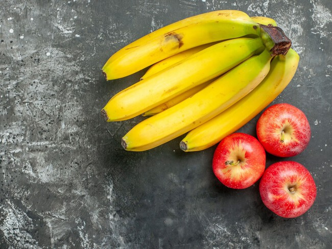
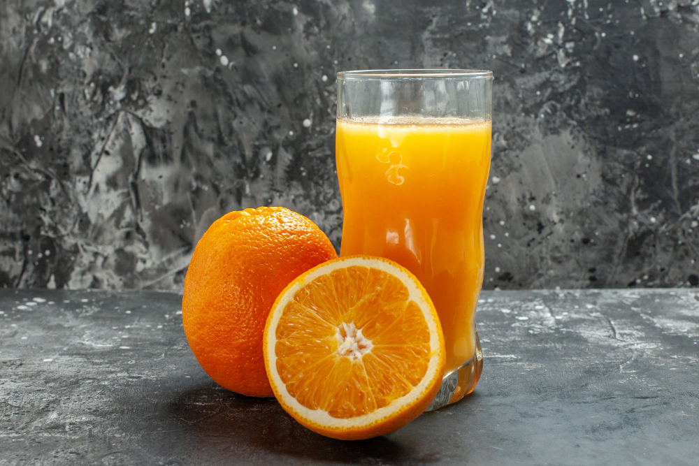
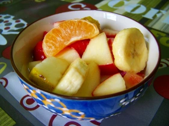

Tronar a la pàgina principal
Macedònia de fruites
Ingredients
- 2 pomes
- 2 plàtans
- 200 g de fruites del bosc
- Suc de 1 taronja
Pas a pas
-
Pelar i tallar les pomes i plàtans. Afegir 2 pomes i 2 plàtans.

-
Barrejar totes les fruites en un bol i afegir el suc de taronja.
Afegir 200 g de fruites del bosc i suc de 1 taronja.

-
Refredar a la nevera abans de servir.

Resultat final
Una postres lleugera i plena de vitamines.

Tornar a l'encapçalament principal